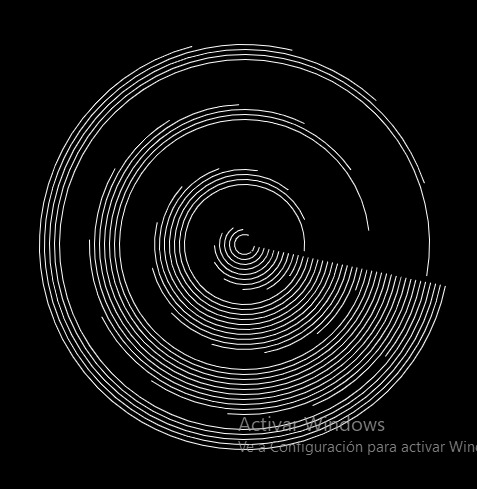

Hola bienvenidos a todos, mi nombre es Kath y en este página se mostaran mis descubimientos
y mis errores sobre html, css, pj5, entre otros. Así que deberan tener paciencia
Descubrimientos P5.js

Pulpi: A través de cruces, el posicionamiento y la rotación se creo una especie de rombo deforme.
Loop: Se hizo un rapeticion de arcos, más la incorporaxión de la rotacion y traslación.
Iluisón: Para este efecto se utilizo la recursión, pero con variables las cuales cambiaban el eje x e y para aumentar la cantidad en consideración al doble.
Rainbow: Repeticiones de un elemento más la incorporación de una variable inc y un map.
50 años: La propuesta trata sobre las travesías y como las estrellas iluminan el camino, de manera que al deslizar el mouse se van juntando para formar la frase de celebración, se utilizo las herramientas de texto, jugando con la dispersión y lo random.
Mándala: Una espiral que esta formada por arcos los cuales generan diferentes formas de flores.
Triangle: A traves de un circulo el cual se repite varias veces y jugandocon elk posicionamiento de x e y. se logro desplazar.
Snoopy: Lograr generar esta magnitud de tamaño con variables las cuales la coordenadas "x" de las nubes logrando que respectivamente aumentaran o disminuyeran en 1, distanciándose, esto mismo con el sol el cual se cambio las coordenadas de ancho y largo en más 5 para que aumentara el tamaño total.
Fire: Se implemento el algoritmo de Vogel dando a lugar a dos conjuntos de espirales que giran en sentidos contrarios.
Mi Proyecto
En la búsqueda para realizar el proyecto final que abarca todos los conocimientos aprendidos,
llegué a preguntarme ¿qué resultado sólo es capaz de hacer la programación que la animación u otra área no pueda
lograr? y es ahí en donde pensé en realizar un juego interactivo con el espectador.
Es aquí como nace la idea de “Lucky Pig”, que trata sobre un cerdito que tiene que atrapar todas las monedas
posibles, pero si se les pasan más de tres pierde y no alcanza su meta.